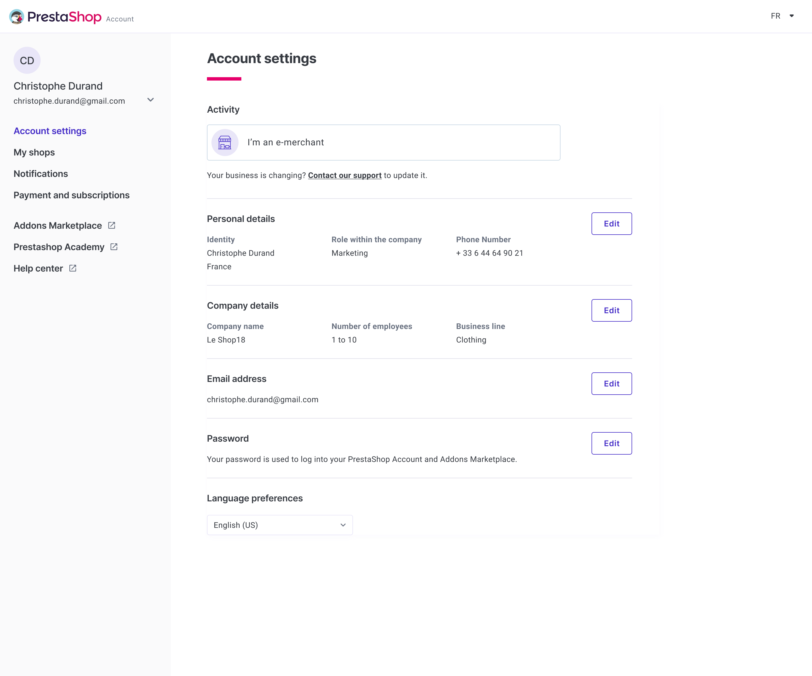
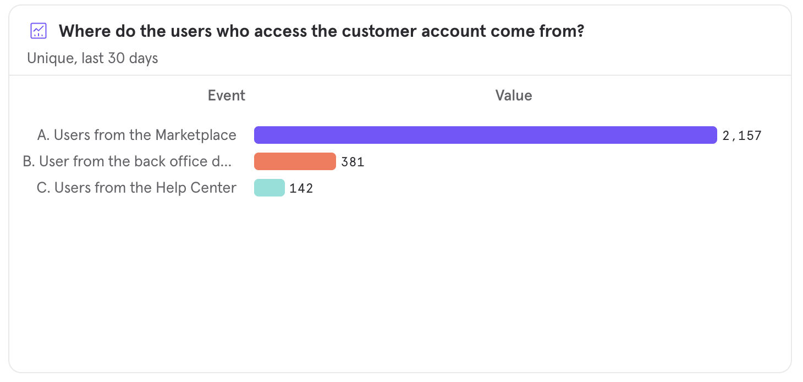

I make complex, demanding products simple. Currently on Opal DS at Oplit.
Based inNantes, FR
FocusB2B SaaS, DS
Experience7+ yrs
StatusOpen
Scroll
Skills Design Systems · Product Discovery · User Research · Design Tokens · Industrial SaaS · Prototyping · Design Ops · Figma ·Skills Design Systems · Product Discovery · User Research · Design Tokens · Industrial SaaS · Prototyping · Design Ops · Figma ·
Over the last 7 years, I've contributed to the design and improvement of B2B SaaS products, alongside teams at Oplit (industrial schedulers), PrestaShop (300k+ merchants), Airbus and SNCF. I've led design systems, run audits, and shipped infrastructure that teams build on.
What I'm looking for: high-stakes products where design co-pilots strategy, not a service function.
I came to design without really noticing it.. first through the games I played, then something deeper that stuck: a curiosity for graphic systems and the drive to build the things that had gradually fascinated me.
Senior Product Designer at Oplit, a B2B SaaS platform for industrial scheduling. I design for planners and shop-floor operators in luxury watchmaking, aerospace, and precision engineering. Expert users, direct operational impact. I took over and deployed Oplit's design system as a structural element of the organization, aligning design, engineering, and product around a shared language.
What interests me: SaaS environments where design shapes how organizations work. A decision framework that holds, a component system that speeds up the team, research that redirects a roadmap. I'm looking for roles where design co-pilots product strategy.
Professional Experiences
Sept. 2025 - Present
Senior Product DesignerOplit
+
+74% active users (430 → 747) and key features now running on customers' production lines.
Oplit builds production planning software for industrial manufacturers in aerospace, luxury and automotive. I own design on the product: continuous discovery with customers and prospects, strategic features shipped with product and engineering, and the design system I rebuilt (44 components, structured for AI-assisted workflows) which made design execution 30 to 50% faster.
June 2022 - Sept. 2025
Product DesignerPrestaShop
+
Product Designer & Design System Lead (2024)
Progressively structures and deploys the research system across PrestaShop. Responsible for structuring and making the tools, templates, and user data operationally available so product teams can access them quickly and efficiently. The aim is to provide efficient access to user search when designing PrestaShop products for our 300k+ merchants.
Also working on structuring the Design System to make it robust, flexible and scalable. Proposing areas for development, structuring the team around the project and giving visibility to what we're doing.
Design System contributor (2023)
Involved in structuring and implementing the PrestaShop Design System. Working on the monitoring, implementation, and use of components and design tokens by everyone who uses the design system, as well as the components designed by the Product Designers.
Product Designer (2022)
Within the Customer Platform team, working on the design and improvement of the user experience through the user account and, more generally, the login experience.
June 2021 - June 2022
UX/UI DesignerBeApp
+
In charge of UX at Beapp, working mainly with the UI designer and in contact with all the people involved in the various customer projects (PO, Business, Tech).
Designing experiences for different types of clients in the healthcare, automotive, food, institutional, and other sectors. Running creativity, immersion, and co-creation workshops. In charge of user research and testing.
Oct. 2020 - June 2021
UX Designer ConsultantLa Capsule
+
Work as a UX consultant for companies looking to improve their user experience.
Sept. 2018 - Aug. 2020
UX Designer , Work-studyAirbus Atlantique
+
Joined the team of UX/UI designers (UXiD) as part of a process to digitalize the Airbus Group. The team designs and redesigns processes as well as business applications and HMIs, putting people back at the heart of their design.
Responsible for disseminating UX guidelines and best practices throughout the group. Collecting user requirements, participating in the design of business applications, organising information architecture, and working in collaboration with IT and other departments.
March 2018 - Aug. 2018
UX Designer , InternshipSNCF
+
Working as a UX designer in section 574 (innovation) at the SNCF in Nantes. In charge of designing personas, user paths, and screen ergonomics for different applications.
Aug. 2015 - Sept. 2017
UX Designer , Work-studyStéreoSuper
+
An apprentice for 2 years and trained as a web designer with a specialization in UX design, working on several projects and building up solid experience in a field I'm passionate about.
Structuring and development of the PrestaShop Design System. Provide product and core teams with access to a system that enables them to design coherent, fluid and easily structured experiences.
When I joined in June 2022, the PrestaShop "design system" was a set of advanced UI kits in Figma, not shared as a true library. Product designers worked with their own components, tech teams used a separate framework, and interface consistency was weak.
With multiple touchpoints (main product, help center, marketplace, academy), alignment was critical to scaling both product and brand.
Approach
Structured the design system team and implemented shared ownership around a unified workflow.
Set up contribution processes, component review cycles, and regular design-tech alignment meetings.
Built a transparent Kanban in Notion, accessible to both design and tech, to track every component request and status.
Audited the existing system and produced actionable recommendations to realign the system for future growth.
Pushed adoption of documentation standards, making documentation a Go/No-Go criterion for any new component.
Introduced and started implementing design tokens, following best practices for primitive and semantic layers.
Outcome
Implementation of design/tech contribution processes, documentation, comprehensive auditing, governance, and shared Kanban.
Initial implementation of design tokens on test projects (inspired by Nathan Curtis).
Reduction in design/documentation debt, alignment with tech on nomenclature.
What's next
Ongoing documentation standardization across all components.
Rollout of experience libraries for specialized squads, maintaining brand and UX alignment.
Continued monitoring of DS adoption and iteration of governance processes.
Unifying three fragmented PrestaShop accounts (Back Office, Marketplace, Business Care) into one, so users finally stop calling support to update an email.
Product DesignPrototypingResearchUI Design
3 → 1accounts unified into a single customer account
0support requests needed for basic account updates
Kano basicneed, structured as infrastructure, not feature
Context
Back Office, Employee profile (before)Marketplace Addons, Account (before)

Account settings (before)

Mixpanel, Origin of connections to customer account
Research & Discovery
Decisions & Trade-offs
Collaboration
Design Solution
Unified account, Personal informationUnified account, Business information
Redesign of the association flow between the user account and the shop, making it transparent and error-resistant.
Product DesignPrototypingResearchUI Design
600+successful associations per day
~-40%estimated drop in error-driven abandonment
Context
The shop association process, particularly for open-source installations, was a major source of confusion. Merchants didn't understand why association was required and abandoned the process, especially when errors occurred.
The association exists because most users have Open Source shops installed locally on their hosting, not always identified as belonging to the owner account. Association creates this connection.
Approach
Conducted research to identify key pain points and abandonment triggers.
Redesigned the flow to require only the necessary information, providing clear guidance and error correction.
Modeled the new process on the SaaS "Edition" experience, offering seamless association for recognized shop owners.
Prototyped the new flow (including a demonstrative video) and validated improvements with stakeholders.
Research, Flow mapping and wireframes
Current production flow, Association success pathNew association workflow, Simplified steps
Outcome
Major improvement in user comprehension and reduced frustration.
Most shop traffic now flows through the updated payment platform and onboarding.
Unified the experience with the "Edition" SaaS model for consistency.
Executing the design system remediation plan: rebuilding 44 components, applying 2,634 token bindings, and establishing a dev-alignment workflow that accelerates feature delivery by 20-30%.
The morning my PM took a prototype to a client without me. Two AI skills that let the design system build screens from a plain-language brief, and what that did to the craft.
A systematic Opal DS audit, graded findings against four industry frameworks, with a phased remediation plan I executed over the following months.
Design SystemAuditDesign Ops
3 levelsseverity grading
3 horizonsremediation plan
4 frameworksAtomic Design · BEM · DTCG · WCAG
Context
Methodology
The audit at T0 (Nov 2025): the global verdict in one screen, with the six structural points it revealed.
Findings
Design debt: foundations coverage (Typography, Shadows, Breakpoints absent) and two competing Figma libraries.Dev debt: 3 icon libraries, Vuetify bypassed with heavy overrides, no Storybook, no shared token repo.
The most critical debt is cross-cutting: no Figma-to-code bridge, no parity, no governance. Design-dev alignment became the top priority.
Before transfer, Sector 1 at 200% load rate, stock rupture alert, production targetsTransfer modal, pre-filled info, destination selection with current load rate (15%)
One coupled pattern: multi-select triggers a sticky action bar, so schedulers can update 50 work orders in one click instead of fifty. Same behavior across cards and Gantt views.
Multi-select in context, Suivi d'avancement (cards) per PDC, multi-PDC, status update · Gantt viewSticky action bar, annotated specs: full bar, capacity-aware variant, secondary actions menu, loading state
Outcome & Measurement
Mixpanel, Multi-select usage by action type (30 days) + distribution by client/user (2,250 total)